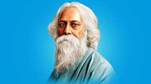
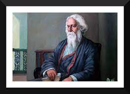

Rabindranath Tagore
BENGALI POLYMATH
Nationality
Calcutta,Bengal Presidency,British India
Date of Birth
07 May 1861
Occupation
Poet/Composer/Novelist/Philosopher
Biography
Rabindranath Tagore was born on 7th May 1861 in Calcutta as the youngest son of Debendranath Tagore and Sarada Devi.
His grandfather Dwarkanath Tagore was a rich landlord and social reformer. His father, Debendranath Tagore was a leader of the Brahmo Samaj, a new religious sect in nineteenth-century Bengal which attempted a revival of the ultimate monistic basis of Hinduism as laid down in the Upanishads.
The Tagore family was a treasure trove of talent in every field. They hosted the publication of literary magazines; theatre and recitals of Bengali and Western classical music featured there regularly. Tagore’s father invited several professional musicians to stay in the house and teach Indian Classical music to the children.
Tagore’s oldest brother Dwijendranath was a philosopher and poet. Another brother, Satyendranath, was the first Indian appointed to the formerly all-European Indian Civil Service. Another brother, Jyotitindranath, was a musician, composer, and playwright. His sister Swarnakumari became a novelist.
EDUCATION
Rabindra Nath Tagore had his initial education in Oriental Seminary School. But he did not like the conventional education and started studying at home under several teachers. He was mostly trained by his siblings both in literary as well as physical activities like gymnastics and martial arts.
Tagore was a child prodigy when it comes to writing as he has started writing and publishing poetry by the age of eight.
In 1873, at the age of eleven, Tagore and his father left Calcutta to tour India for several months. He visited his father’s Santiniketan estate and Amritsar before reaching the Himalayan hill station of Dalhousie where he read biographies, studied history, astronomy, modern science, and Sanskrit, and examined the classical poetry of Kalidasa.
At the age of seventeen, he was sent to England for formal law schooling but he did not finish his studies there. He rather took up independent studies of Shakespeare.
He returned from England in 1880 and regularly published poems, stories, and novels in Bengali, slowly starting to transform Bengali literature.
In 1883, he married Mrinalini Devi, a child bride as was the tradition in those times
Composer
1.Jana Gana Mana(Indian National Anthem)
2. Bharot Bhagyo Bidhata
3.Ekla Chalo Re
4.Banglar Mati Banglar Jol
5.O Amar Desher Mati
6.Amar Sonar Bangla
Songs
Poet
1.On the Nature of Love
2.Paper Boats
3.Where The Mind Is Without Fear
4.Gitanjali
5.Friend
6.Distant Time
7.Endless Time
8.Lord of My Life
Poems
Novelist
1.Chaturanga
2. Shesher Kobita
3.Char Odhay
4.Noukadubi
5.Kabuliwala
6.Gora
Novels

"
“At the end of the journey, I am able to see, a little more clearly, the orb of my life. Looking back, the only thing of which I feel certain is that I am a poet.”
"